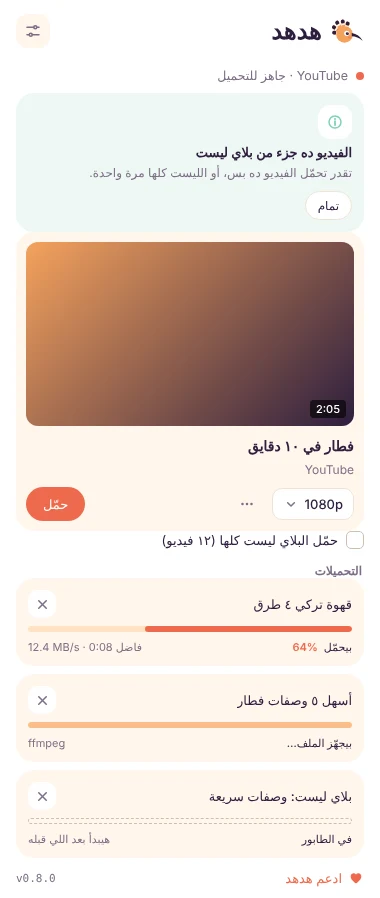
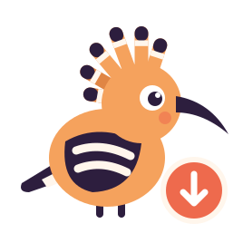
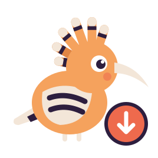

بيلاقي لوحده
شغّل الفيديو والأيقونة هتنوّر. مش محتاج تدوّر على لينكات أو تفتح أدوات المطوّرين.
مجاني · من غير إعلانات · لكروم وإيدج
إضافة بتلاقي الفيديوهات في الصفحة وانت بتتفرّج، وتنزّلها بضغطة: يوتيوب والبلاي ليستات، ستوريز فيسبوك وإنستجرام، وفيديوهات البث HLS كملف MP4 عادي.



شغّل الفيديو والأيقونة هتنوّر. مش محتاج تدوّر على لينكات أو تفتح أدوات المطوّرين.
اختار الجودة لحد 4K، أو نزّل البلاي ليست كلها مرة واحدة. (بالمساعد)
ستوريز فيسبوك وإنستجرام بتيجي صورة وصوت منفصلين — هدهد بيدمجهم في ملف واحد جوه المتصفح.
فيديوهات البث المقسّمة بتتجمّع وتتحوّل لـ MP4 على جهازك، من غير ما ترفع حاجة لأي سيرفر.
نزّل الصوت بس، واحفظ الترجمة والصورة المصغّرة والبيانات مع الفيديو لو عايز.
مفيش حسابات ولا تتبّع ولا إعلانات. كل حاجة بتحصل على جهازك.
ملف واحد فيه الإضافة والمساعد. فُكّه وشغّل ملف التسطيب، وهو هيجيب الباقي لوحده. مش محتاج صلاحيات أدمن.
صفحة إرشادات هتفتح لوحدها: شغّل «وضع المطوّر» واختار فولدر هدهد. ده مرة واحدة بس، وبعد كده التحديثات بضغطة من جوه الإضافة.
افتح أي فيديو، دوس على أيقونة هدهد واختار الجودة. الملف هيتحفظ في فولدر التنزيلات.
هدهد مش موجود في متجر كروم، بتنزّله من هنا مباشرة. آخر إصدار:
الإضافة لوحدها من غير المساعد (للمتقدمين)
المساعد بيستخدم yt-dlp وffmpeg وDeno وبينزّلهم من مصادرهم الرسمية أثناء التثبيت.
هدهد مش بيكسر حماية المحتوى. الفيديوهات المشفّرة (DRM) زي نتفليكس وشاهد بيتعرف عليها ومش بتتنزّل.
أيوه، مجاني بالكامل ومن غير إعلانات. الكود مفتوح تحت رخصة GPL-3.0.
متجر كروم مش بيسمح بإضافات بتنزّل من يوتيوب، فبننشره هنا مباشرة. التثبيت بياخد دقيقة.
التسطيب بيجيب الاتنين مع بعض وده الأسهل. الإضافة لوحدها بتنزّل الفيديوهات المباشرة والستوريز وHLS، والمساعد بيضيف يوتيوب والبلاي ليستات وMP3 والترجمة ومواقع تانية كتير.
لما يطلع إصدار جديد هتلاقي زرار «حدّث دلوقتي» جوه الإضافة. بيحدّث الإضافة والمساعد مع بعض في أقل من دقيقة.
أيوه، على أي متصفح مبني على Chromium: كروم، إيدج، برايف، فيفالدي.
المساعد بيتثبّت لحسابك بس من غير صلاحيات أدمن، وبيكلّم الإضافة بتاعتنا بس. الكود كله متاح تراجعه.